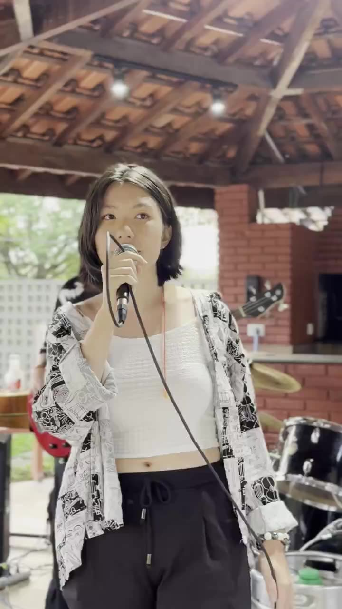
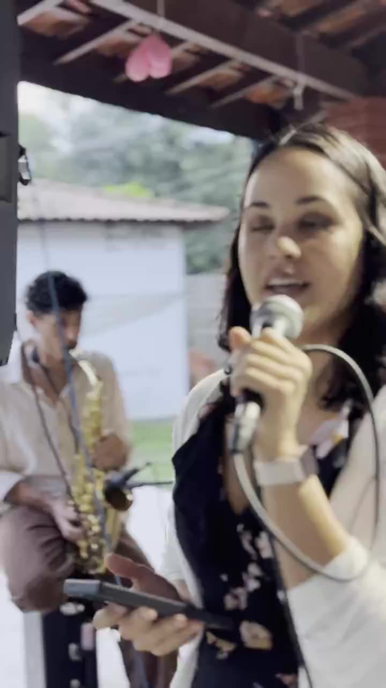
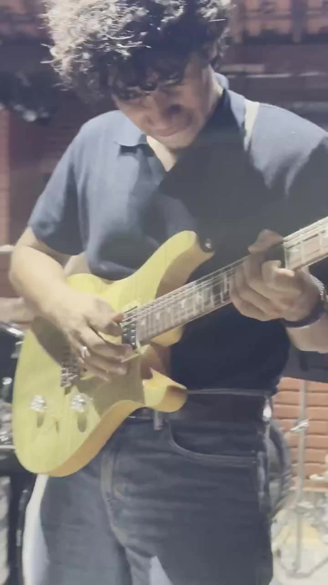

DIREÇÃO MUSICAL · MULTI-INSTRUMENTISTAPablo Carvalho
Violão, guitarra, baixo, bateria, teclado, sax e voz. Monta, ensaia e dirige cada formação.
Kithara · música ao vivo
A engenharia por trás do arrepio.
Sobre
Música é linguagem. Nascemos no ITA, entre engenharia e palco, e levamos essa lente para cada show: curadoria, produção e o encontro entre os artistas certos e o seu evento.
Artistas
Violão, guitarra, baixo, bateria, teclado, sax e voz. Monta, ensaia e dirige cada formação.

Cantora. Em duo com o Pablo ou com a banda.
VER VÍDEOS →
Cantora. Em duo com o Pablo ou com a banda.
VER VÍDEOS →
Guitarra, baixo e bateria. Do jazz ao prog metal, sem voz.
VER VÍDEOS →Ao vivo · ThanatoFest · out/2026
Festival que co-organizei no Feijão, para a comunidade do ITA: marketing, contratação e logística do som, e dois sets no palco. Toque num vídeo para assistir com som.
Do estúdio
Autoral, letra minha. A versão final sai gravada em estúdio, com produtor parceiro.
Contato